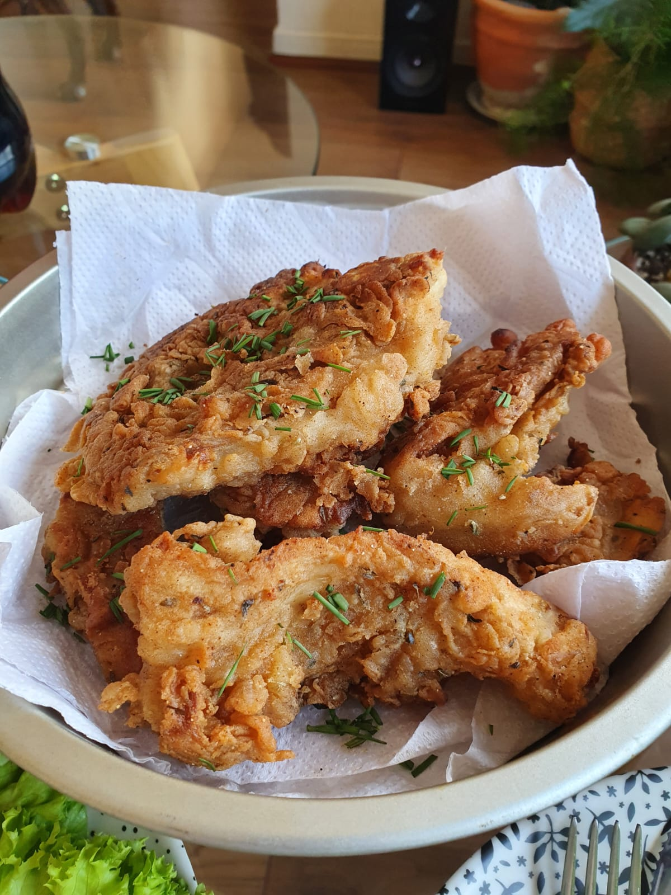

Champilones ostra fritos
Volver

Mejor que el pollo frito, y sin crueldad
En TikTok vi que Niel Degrasse Tyson decía que somos más parecidos genéticamente a los hongos que a las plantas. No por nada los champis tienen un gustito a carne.
Esta receta de champiñones ostras fritos te hará olvidar la carne.
Ingredientes
- Champiñones ostra
- Harina
- Cerveza
- Sal, pimienta, paprika y orégano
- Aceite
Pasos
Para el batido
- Mezcla la harina con tus otros ingredientes secos
- Incorpora cerveza hasta lograr una mezcla homogénea
- Cuidado con que no te quede muy líquido
Para freír
- Pasa tus champiñones trozados (no los hagas tan chicos, sigue sus formas naturales) por la mezcla
- Una vez bañado, viértelo al aceite previamente calentado
- Puedes freírlo dos veces para doble crocancia